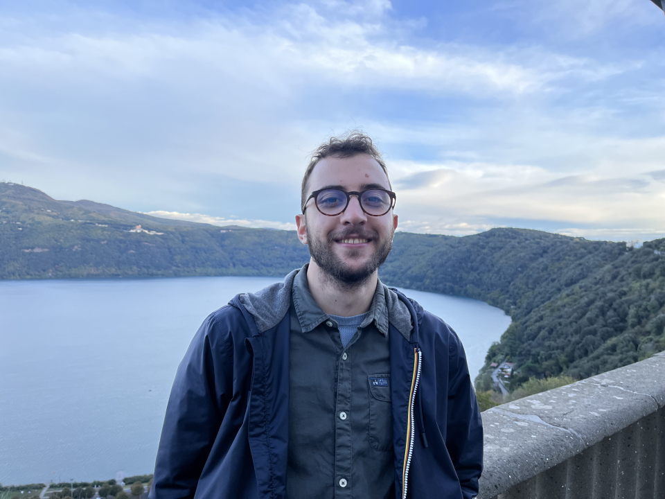

MSc in Computer Science and Engineering
I am PhD student in Neuroscience at the Italian Institute of Technology (CTNSC@IIT), studying the role of motor processes in speech perception with prof. Luciano Fadiga and Alessandro D'Ausilio